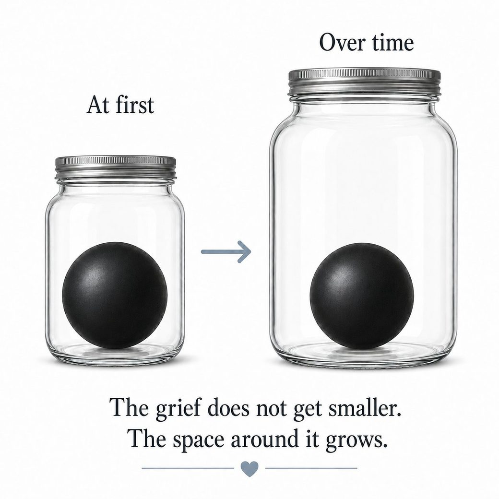

You don't have to know what's wrong.
What would help right now?
This tool is designed to hold, not collect. It supports but does not replace therapy or crisis care. Your reflections stay on this device unless you copy or share them.
If you're not safe right now — call or text 988.
·
Use this when you're about to send, say, do, or decide something and want a second first.
Hold off for a second. If there's something to read, read it once more, slowly.
Or if a beat isn't enough —
What to do now
If you are in immediate danger, call 911. If you are in suicide crisis or worried you might not stay safe, call 988 or text 988 from your phone.
Call 911 now — immediate danger
If you or someone else is in immediate danger, or you need an ambulance, police, or fire, call 911 now.
988 — Suicide crisis support
For suicide crisis support, or if you are worried you might not stay safe. 24/7 across Canada.
Call 988Text 988 from your phone
Additional support
Hope for Wellness — Indigenous support
Mental health counselling and crisis support for Indigenous people across Canada. Phone and online chat available 24/7.
Phone and online chat are available in English and French. Cree, Ojibway, and Inuktitut telephone support may be available on request.
Call 1-855-242-3310 Open chat / websiteTrans Lifeline — peer support
Peer support for trans and questioning people in Canada.
Call 1-877-330-6366ConnexOntario — Ontario mental health, addiction, and gambling
Free and confidential support, 24/7.
Call 1-866-531-2600Text CONNEX to 247247
Open websiteIf you feel frozen: put both feet on the floor, take one slow breath, then choose the safest next step above.
Sometimes the hardest thing isn't too much. It's nothing at all.
What's happening
When the nervous system gets overwhelmed — by stress, loss, chronic pressure, or simply too much for too long — it sometimes does the opposite of panic. It goes quiet. Flat. Numb. Shut down.
This isn't laziness. It isn't weakness. It's a protective response — your system doing what it learned to do when things got to be too much.
It won't stay like this.
The waiting trap
Most people wait to feel motivated before they act. That's backwards.
Motivation doesn't come first. Action does. Even small, pointless action — standing up, making something warm to drink, stepping outside for sixty seconds — creates the conditions for motivation to follow.
You don't have to want to do it. You just have to do something small enough that it doesn't require wanting.
One small move — right now
Not a task. Not a plan. Just one thing that involves your body in the world:
- Stand up and walk to a different room
- Open a window and look outside for thirty seconds
- Make something warm to drink
- Put on one song — anything
- Step outside, even just to the doorstep
You don't have to feel better after. You just have to move.
What's one small thing you could do right now?
Even something that feels pointless. Even getting up counts.
If you want to understand what you're feeling
Numbness often has something underneath it. You don't have to find it right now — but if you want to look:
If this has been going on for a while
Persistent low mood, shutdown, and flatness that doesn't lift can be signs that something more is going on. That's worth talking to someone about.
What would feel most useful right now?
Press your feet into the floor. One slow breath. You're here now.
You don't have to know what's wrong.
You just have to be here.
No pressure to choose the right thing. Start wherever feels easiest.
What feels closest right now?
Press your feet into the floor. One slow breath. You're here now.
If you need to settle something fast:
If there's something to sort through:
Grief doesn't ask you to let go. It asks you to make room.
You may be carrying more than one loss at once.
Start wherever feels closest right now. You can move between these, or come back to a different one anytime.
Where does this sit most right now?
Whatever you choose, it won't lock you in.
Whether your person has died, or you're living alongside a loss that hasn't finished arriving — both are grief. The ground is a little different for each.
You don't have to get this exactly right. Pick whichever feels closer — you can always come back.
Which is closer right now?
They're gone. That is enough.
Sometimes grief is plain. Someone died. Something ended. You don't need a special name for what you're feeling, and you don't have to explain it to anyone, for it to count.
You might miss them in the obvious moments, and in the small ones — reaching for your phone to tell them something, the empty chair, the habit of them. The absence can show up where you least expect it. That ache doesn't need fixing. It's the shape of what they were to you.
If reading more is too much right now, you don't have to keep going. You can go straight to something steadier: , , or .
What else was lost with them?
When someone dies, it's rarely only them you lose. Sometimes the grief is heavier than you can explain because it's holding all of this at once —
- daily contact — the ordinary, constant presence of them
- the support they gave you
- traditions you only had with them
- shared jokes, language, or ordinary rituals
- a role you had with them — and who you were in it
- a place or routine that held the two of you
- the future you pictured with them in it
- a version of family, community, or home
If you've found yourself grieving more than you expected, or grieving things that have nothing to do with the person directly — this is why. None of it is too much.
You may have heard grief comes in stages, ending somewhere like acceptance. It doesn't usually work that way. Grief isn't a set of steps, a checklist, or a line you walk to the end of. Not everyone feels the same things, or in any order.
It can loop back. It can go quiet for a while and then return. It can ambush you on an ordinary Tuesday. If you thought you were "past" something and it's back, you haven't done anything wrong — that's just how grief moves.
If it helps — a way to picture it
Grief is sometimes described as a ball inside a jar. At first the jar is full — there's little room for anything else. Over time the grief doesn't necessarily shrink. But the jar can slowly grow, as life adds to it. Grief and living learn to take up space side by side.
This isn't something to do, or a sign of progress you owe anyone. The grief doesn't have to get smaller. And if the jar hasn't grown at all yet, that's allowed too.

One more thing, whenever you're ready for it: healing doesn't have to mean forgetting, or letting go. People often stay in relationship with the person they lost — in memory, in habits, in the things they carry forward. Keeping them close isn't failing to move on. It's part of how grief works.
What do you miss that other people might not understand?
You can write one sentence, a list, or nothing at all.
Not saved unless you choose to save a snapshot.
Or, only if it feels okay to ask: is there one thing — however small — that has helped the jar grow even a little? There may not be, and that's completely fine.
Right now
You don't have to do anything with this. But if it would help —
If grief is feeling like more than you can hold — .
They're still here. And something is already changing.
Grieving someone who's still alive is its own kind of hard. You may be caring for them, sitting with them, loving them — and mourning them at the same time. People around you may not see it as grief at all, because they're still here.
Grieving someone before they're gone can feel like giving up on them. Many people carry that feeling. The grief is often there because the loss is already happening, even while the love remains.
There's no schedule for this. You're allowed to feel the loss now and still have them now.
What might already be changing?
Anticipatory grief is often made of small, quiet losses that are hard to point to — because the person is still right there. You might already be grieving —
- conversations you used to have with them
- the way they recognized you, or you recognized them
- ordinary routines that aren't ordinary anymore
- the role they held in your life — and the one you held for them
- a sense of steadiness, or safety, or time
- the future you pictured with them in it
- moments you can feel slipping before they're gone
- something that's changing too slowly, or too fast, to name
If you're grieving things that are still partly here, you're not getting ahead of yourself. You're keeping up with what's real.
You might feel tenderness and dread, love and exhaustion, hope and resentment — sometimes in the same hour. You might want more time, and also wish the hardest parts could ease. That does not make your love smaller. It means you are carrying something very heavy, for a long time, without knowing when it ends.
What are you already grieving, even while they're still here?
You can write about what's changed, what you miss, what you fear, or what you still want to hold close.
Not saved unless you choose to save a snapshot.
Right now
You don't have to do anything with this. But if it would help —
If grief is feeling like more than you can hold — .
This can be grief too.
The person may still be here, but the relationship you knew may not be.
You may be grieving the closeness, the trust, the safety, the future, the role, or the version of them that's no longer available in the same way. None of that has to be final, or fully understood, to be grief.
Some people call this ambiguous loss — when someone is still here, but something important has changed or become unreachable. Mixed feelings can be part of that too.
What feels most lost?
You might be grieving —
- the closeness you used to have
- trust that's no longer there
- the future you imagined together
- who they used to be
- who you got to be with them
- the role they used to hold in your life
- something you can't quite name yet
Whatever's here — missing them, anger, relief, guilt, numbness, loyalty, longing, love that has nowhere simple to go — it can all be true at once. You don't have to resolve it into one feeling.
What are you grieving that other people might not see?
There's no right answer, and you don't have to write anything at all.
Not saved unless you choose to save a snapshot.
You may not need to decide anything about the relationship right now. Sometimes the next honest step is simply naming what is no longer the same.
Another question, only if it fits: what feels true about this relationship now that you haven't had room to say? You can use the same space above.
Right now
You don't have to do anything with this. But if it would help —
If it's the relationship itself you want to look at — not the grief — . No need to, unless it feels right.
If grief is feeling like more than you can hold — .
This can be grief too.
Sometimes what's gone is not a person, but a version of life — or a version of you.
A role, a body, a future, a rhythm, a community, a capacity, or a sense of direction can change enough that it needs to be grieved. It doesn't have to be visible to anyone else to be real.
What feels most changed?
You might be grieving —
- the role you used to have
- the body or capacity you used to count on
- the future you pictured
- the routine or community that held you
- a version of yourself that felt familiar
- the timeline you thought you were on
- the kind of support, independence, or belonging that changed
- something you can't name yet
You might feel sadness, anger, embarrassment, relief, numbness, envy, guilt, fear, or nothing clear at all. None of that means you are doing grief wrong.
What part of your life, role, body, future, or sense of yourself feels most changed right now?
You can write one sentence, a list, or nothing at all.
Not saved unless you choose to save a snapshot.
Right now
You don't have to do anything with this. But if it would help —
If you want to remember who you are beyond what changed, you can . No need to, unless it feels right.
If grief is feeling like more than you can hold — .
Sometimes grief isn't one clean loss. It can be a person, a role, a future, a version of yourself, a relationship, and the life that used to hold all of it — tangled together.
You don't have to pull the threads apart to be here. You don't even have to know what all of them are.
Some grief is harder because others may not see it as grief at all — a pet, a friendship, a miscarriage, an estrangement, a future that didn't arrive. Some people call this disenfranchised grief. It counts here.
When it's tangled, what can help?
- name one thread, without untangling the whole knot
- let two true things sit side by side, even if they seem to contradict
- notice what's heaviest today — not forever
- put one piece into words, if words come
- let care come before figuring it out
- lean on someone who won't rush you to explain it
You don't have to sort all of it. What is one part of this grief that feels closest to the surface right now?
One sentence is enough. So is nothing.
Not saved unless you choose to save a snapshot.
Right now
You don't have to do anything with this. But if it would help —
If grief is feeling like more than you can hold — .
Loss rarely arrives in one neat piece. You don't have to sort it to deserve support. Here are some things that help with grief of any kind.
Right now
If grief isn't moving
Some grief needs more than a tool can hold. That's not a failure — it's information. Speaking with someone trained in grief can make a real difference.
Grief doesn't ask you to let go. It asks you to make room.
Grief takes many shapes — these are some of them. If none feel like yours, that doesn't mean you're not grieving.
Sometimes grief is plain. Someone died. Something ended. A chapter closed. You don't need a special name for what you're feeling for it to count.
The jar
Grief is like a ball inside a jar. At first, the jar is full — there's little room for anything else. Over time, the grief doesn't necessarily shrink. But the jar can expand — as new experiences, relationships, roles, and moments of joy are added. Life and grief learn to exist side by side.
The goal isn't to make the ball smaller. It's to keep building the jar.
Is there anything that has expanded in your jar, even slightly — alongside the grief?
Even something small counts. You don't have to have an answer.
Not saved unless you choose to save a snapshot.
Some shapes grief can take
Ambivalent grief
Missing someone who also hurt you. Grieving a relationship that needed to end. Feeling the loss of something that was also harmful.
This is one of the most disorienting forms of grief — because two true things are in conflict at the same time.
A few things worth knowing:
- Love and harm aren't mutually exclusive. You can love someone who hurt you. The love was real. That doesn't make the harm less real either.
- Grief follows attachment, not worthiness. We don't only attach to safe people. Missing someone harmful doesn't mean you're endorsing what they did.
- There's a layered loss. You're not only grieving the person — you're also grieving the version of them you needed them to be, and the relationship you deserved to have.
If your mind is saying "I should be over this" or "something is wrong with me for still missing them" — that thought is the grief, not the evidence.
You're allowed to miss them and know it was right to go.
Disenfranchised grief
A loss others don't recognise or validate. A friendship that ended. A miscarriage. A pet. A version of yourself you had to leave behind. A future you had planned and will now never have.
These losses are real. The absence of a funeral doesn't make them smaller.
Anticipatory grief
Grieving something before it's gone. A diagnosis. A relationship ending slowly. Watching someone you love decline. You're already feeling the loss before it arrives.
That's not weakness. That's love running ahead of time.
Complicated grief
When grief doesn't move. When it stays as acute as the day it arrived, months or years later. When it interrupts daily life and won't settle.
This one usually needs more support than any tool can offer — but naming it is the first step.
Right now
You don't have to do anything else with this. But if it would help — grief lives in the body first:
If the person is still here and this is about the live relationship — .
If grief isn't moving
Some grief needs more than a tool can hold. That's not a failure — it's information. Speaking with someone trained in grief can make a real difference.
Relationships happen between people. A tool can help you sort what you're carrying — it can't sort the relationship itself.
What this touched
You don't have to decide what to do with this yet. First, it may help to notice what this moment touched.
What happened — just this moment, not the whole history?
What did it touch in you?
What did you need, hope for, or expect?
What felt crossed, lost, repeated, or exposed?
Is part of this about right now, and part of it older?
What do you want to remember before you respond?
There's nothing to answer here. Sit with whatever surfaced for as long as you need.
If you want a next step, one of these may fit.
If this is bigger than sorting
Some relational pain isn't a sorting problem — it's a being-harmed problem. If someone is hurting you, controlling you, or making you feel unsafe in your body, this tool can't hold that. Reach out to someone who can.
What's pulling at you?
Press your feet into the floor. One slow breath. You're here now.
Not sure yet? Start here:
Or if you have a sense of what's pulling at you:
That's a good place to be.
What would you like to explore?
Naming a thing is sometimes most of the work.
You don't have to pick the right door.
Not sure yet? Start with the feeling itself.
Or — what seems to be part of this?
That's a real combination.
These will be here while you work.
The goal isn't to win. It's to say what's true in a way that maintains our relationships.
These skills work best in close personal relationships — friendships, partnerships, and family.
These tools are for situations where it's reasonably safe to speak up.
If this person may punish, threaten, control, or harm you for setting a boundary, a script isn't the right place to start. Support and safety come first.
Not ready to draft yet? You might want to understand this first.
Before the next move — .
DEARMAN — Ask for what you need, or say no
Use this when you need to make a request or hold a boundary clearly. Fill in each step with your situation — then see your script.
D — Describe the situation, just the facts
E — Express how you feel. Use "I feel" not "you made me"
A — Assert what you need, clearly and directly
R — Reinforce — what's in it for the relationship?
M — stay Mindful. Stay on your point. If they push back, deflect or redirect — don't get pulled into a different argument.
A — appear Willing. Show you're open to a middle ground, even if you're firm on the core need.
N — Negotiate. Ask what might work for them. "What would feel fair to you?"
You have something to come back to.
You don't have to perfect it before you use it.
Take one slow breath.
Notice what's already in your body — tension, anticipation, dread.
You don't have to resolve it. Just notice it's there.
What would help most before you go in?
Using tools before you need them — that's how they become reliable when you do.
Or if it's already happening — .
5-4-3-2-1 Grounding
Let's try 5-4-3-2-1 grounding — one step at a time.
You don't have to figure anything out.
Just begin here.
Look around. Name 5 things you can see.
Notice 4 things you can feel — the chair, the floor, your own hands.
Listen for 3 sounds.
Notice 2 things you can smell.
Nothing obvious? That's fine — skip it.
Notice 1 thing you can taste.
Or just notice your mouth, your breath, or a sip of water.
You came back to the room a little.
Or, if this is more about an urge or impulse —
Or try something else:
Paced Breathing
Inhale for 4 counts, exhale slowly for 6 counts. Repeat 2–3 minutes. The longer exhale is part of why this can help cue your body toward settling.
The 6/10 Rule
If your distress is above a 6/10, ground first. You don't need to process everything at full intensity — work in smaller, safer amounts. Presence, not overwhelm, is the goal.
Even a small shift counts — and either answer below shows you a next step.
Did this help even a little?
You stayed with it for a moment.
That counts.
Grounding is worth coming back to.
If this helped, you don't have to hold it alone.
That's okay. Let's try something different.
This might need more than a tool right now. The next move is toward someone.
Start here if you can:
Reach out to someone you trust — a friend, family member, or anyone who knows you.
Start with one body reset. No need to do all of them.
Start here:
Temperature Shift
Splash cool water on your face, or hold something cool against your cheeks or forehead. For many people, cool sensation can help the body start to settle. If sudden cold feels activating or unsafe for you, skip this one.
If you have heart, blood pressure, or circulation concerns, check with your care team first.
Or try something else:
Physiological Sigh
Double inhale through the nose (breathe in, then sniff a little more), then one long slow exhale through your mouth. A physiological sigh is a natural breathing pattern many people use when the body is tense or overloaded. The double inhale helps take in a fuller breath, and the long exhale can help cue the body toward settling. You do not have to force it — one or two rounds is enough to try.
Box Breathing
Box breathing gives charged energy a simple shape to follow. Breathe in for 4. Hold for 4. Breathe out for 4. Hold for 4. Repeat for a few rounds.
Ready
If holding your breath feels uncomfortable, skip the holds or choose a gentler breathing exercise.
Paired Muscle Relaxation
Tense a muscle group as you inhale — try your fists, shoulders, or jaw. Hold for 5 seconds. Release completely as you exhale. Notice the contrast. Repeat 2–3 times.
Feet on the Floor
Press your feet firmly into the ground. Move your toes. Say quietly: "I am in [room]. I am okay right now." Repeat until you feel more anchored.
Even a small shift counts — and either answer below shows you a next step.
Did this help even a little?
You worked with your body instead of fighting it.
Your body may not settle all at once. But it can sometimes find one small signal of safety.
If this helped, you don't have to hold it alone.
That's okay. Stay with me. Try this instead.
Your body is telling you something that a tool can't fully address. Reaching out to someone is the right next step.
Start here if you can:
Reach out to someone you trust — a friend, family member, or anyone who knows you.
Running on empty?
Sometimes a body need is sitting underneath what you're feeling — quiet enough to miss.
This doesn't explain anything away. What you're feeling is real. But the body underneath it can be carrying extra weight — and that's worth noticing before reaching for another tool.
Anything here ringing true?
Pick what's closest. None of these have to be the whole story.
If none of those quite fit:
Put a hand on your chest or stomach.
Notice what's there. Don't name it yet.
Just feel the physical texture of it — weight, tightness, heat, emptiness.
Note a possible next step
Something small. Not a full plan, not a commitment — just one thing you might do.
Hand on your chest. Feel it rise and fall.
That's enough for right now.
Whatever is there — it's allowed to be there.
Working with heavy feelings
Name It to Tame It
Naming an emotion — "I'm angry," "I feel grief" — often takes some of its edge off. The more specific, the better. "I feel embarrassed" tends to land more clearly than "I feel bad."
Where do you feel it in your body? Tight chest → anxiety or anger. Heavy chest → grief. Heat in face → anger or shame. Stomach drop → fear.
Guided
Don't know what you're feeling? Name it precisely — takes 3 minutes.
Guilt vs Shame — An Important Difference
Guilt says: "I did something I don't feel good about." It's about behaviour — and can guide repair.
Shame says: "I am bad, broken, unworthy." It's about identity — and shuts people down.
Which one are you carrying right now?
Emotions Come in Waves
Even strong feelings usually peak and pass within minutes when not fought or avoided. Staying present without escaping — that's how emotions move through instead of getting stuck.
"I can stay with this feeling. It will rise and fall."
Even a small shift counts — and either answer below shows you a next step.
Did this help even a little?
You moved toward the feeling instead of away from it.
Naming it helps. That's yours to keep.
If this helped, you don't have to hold it alone.
That's okay. Stay with me. Try this instead.
Some feelings need a real person, not a tool. Reaching out is the right move.
Start here if you can:
Reach out to someone you trust — a friend, family member, or anyone who knows you.
Feeling stuck is information, not failure.
Finding Direction
Control Check
Ask: "Is this something I can actually influence right now?"
- Yes → Take one small action. Just one.
- No → Move to acceptance and grounding. Rumination pretends to be problem-solving. It usually isn't.
One Small Thing
What's the single smallest action you could take today? Not the solution — just the next right step. What's the easiest, most manageable first move?
Action doesn't have to be big to be meaningful. One small thing is still forward motion.
Sort What's Yours to Carry
Some of what's weighing on you might not actually be yours. Which of your current challenges feel personal — rooted in your habits or thoughts? Which are shaped by external things — work demands, housing, systems, or other people's choices?
Just because someone handed it to you doesn't mean it was yours to hold.
Guided
Sort what's yours to carry — and what isn't.
If/Then Plan
When you don't know what to do next, commit to one conditional:
"If [this moment], I will [one small action]."
Example: "If I'm still stuck after 10 minutes, I'll text one person."
You're not solving it. You're giving yourself a direction when the moment comes.
Even a small shift counts — and either answer below shows you a next step.
Did this help even a little?
You looked at the situation instead of just spinning in it.
Sorting what's yours makes the rest more manageable.
If this helped, you don't have to hold it alone.
That's okay. Stay with me. Try this instead.
Feeling stuck this deeply is worth bringing to someone — a person in your life, or a professional.
Start here if you can:
Reach out to someone you trust — a friend, family member, or anyone who knows you.
Is there a conversation that needs to happen?
You don't have to explain yourself for this to be real.
The specific loneliness
There's a particular kind of alone that isn't about being by yourself. It's being surrounded by people who don't quite get it. Carrying something you can't fully explain. Feeling like the weight of it isn't visible to anyone around you.
That's real. And it's more common than people say out loud.
Hyperindependence
"I can only rely on myself" is often a survival strategy, not a preference. If asking for help feels dangerous or shameful, that's worth exploring. Reaching toward others — even slightly — tends to make things more manageable.
Say what you need
Pick the sentence that fits and send it — in a text, out loud, or just to yourself to get clear first.
- "I need some support right now."
- "I'm not okay and I don't know what I need yet."
- "Can you just be here with me for a minute?"
You don't need the right words. You just need a direction.
One reach — right now
Not a grand gesture. One text or call to someone safe. "Hey, thinking of you" counts. Connection doesn't have to be a conversation about your struggles to matter.
If you have no one to call
ConnexOntario can help you find mental health and social services in your community. Call 1-866-531-2600, 24/7, free, available in multiple languages.
This is a navigation and referral service, not a crisis line or counselling.
Even a small shift counts — and either answer below shows you a next step.
Did this help even a little?
You reached toward connection instead of staying isolated.
Even the smallest reach changes something.
If this helped, you don't have to hold it alone.
That's okay. Stay with me. Try this instead.
This kind of alone needs a real connection, not a tool. Reaching out is the next move.
Start here if you can:
Reach out to someone you trust — a friend, family member, or anyone who knows you.
You don't have to figure this out alone.
What kind of support might help most right now?
Stop. Don't follow the thought.
Look at where you are right now.
You don't have to figure it out. Just step off the track for a moment.
Guided
Have a specific thought looping? Work through it step by step — takes about 5 minutes.
Tools to break the loop
Control Check
Ask: "Is this something I can actually influence right now?" If yes — take one small action. If no — move to grounding. Rumination pretends to be problem-solving. It usually isn't.
Leaves on a Stream
Imagine a gently flowing stream. Each thought that shows up — place it on a leaf and watch it drift away without chasing it. You're the observer, not the thought.
Worry Postponement
Write down everything on your mind. Tell yourself: "I'll come back to this at [specific time]." The thoughts don't need to be solved right now. Give your brain permission to set them down.
Most people find that when they return to the worry later, it doesn't feel as urgent or scary.
Even a small shift counts — and either answer below shows you a next step.
Did this help even a little?
You interrupted the loop — even briefly. That matters.
Stepping off the track — even briefly — breaks the loop.
If this helped, you don't have to hold it alone.
That's okay. Stay with me. Try this instead.
Loops that won't stop sometimes need more than a tool can offer.
Start here if you can:
Reach out to someone you trust — a friend, family member, or anyone who knows you.
Let's slow this down.
You don't have to follow the thought right now.
It can be there — and you can pause.
Take one slow breath before we continue.
Something is being said about you right now.
Not by someone else — by a voice in your own head.
Let's look at it together.
You've already answered this voice with more care.
If you want, you can look at where it may have learned to speak this way — gently, and only as far as feels true.
You don't have to know. "I'm not sure where it came from" is a complete answer.
Where it may have learned to speak this way
Where have you heard this tone before?
What did this voice learn you had to be — to be safe, accepted, useful, impressive, or not rejected?
What might it have been trying to prevent, back then?
What does it still think will happen if it stops talking this way?
Is it protecting you from something real now, or replaying an older rule?
What would you want to say to the part of you that learned to speak this way?
There's nothing to answer here. Take whichever of these fits, and leave the rest.
Understanding where a voice came from doesn't mean you have to obey it.
The way you talk to yourself matters — especially when things are hard.
Managing Self-Talk
Guided
Reframe the inner critic — step by step.
"I'm Having the Thought That…"
Instead of "I'm a failure," try "I'm having the thought that I'm a failure." This creates space between you and the thought — reducing its authority without dismissing it.
The Friend Test
Take the thought. Would you say that exact thing to a close friend who was struggling? If not — it's not fair to say it to yourself either. What would the kinder, more accurate version be?
Thought Diffusion — Lighten the Grip
Try one of these to loosen a sticky thought:
- Say it out loud in a cartoon voice
- Sing it to the tune of "Happy Birthday"
- Write it down and read it slowly — like a script, not a verdict
You don't have to delete the thought. Just loosen its grip.
Even a small shift counts — and either answer below shows you a next step.
Did this help even a little?
You spoke to yourself differently than the critic wanted.
That shift in how you talked to yourself — notice it.
If this helped, you don't have to hold it alone.
That's okay. Stay with me. Try this instead.
Harsh self-talk that won't let go is worth bringing to someone who can help.
Start here if you can:
Reach out to someone you trust — a friend, family member, or anyone who knows you.
Thinking patterns aren't character flaws — they're mind habits. Our minds filling in gaps too confidently.
Common Thinking Traps
11 Patterns Worth Knowing
- Catastrophizing — jumping to worst-case
- All-or-nothing — no middle ground
- Mind reading — assuming what others think
- Fortune telling — predicting failure
- Emotional reasoning — "I feel like a failure, so I must be"
- Should statements — rigid rules that create shame
- Labelling — "I am a failure" vs "I failed at this"
- Personalization — taking blame for things outside your control
- Filtering — noticing only the negative
- Overgeneralising — one event becomes a permanent pattern
- Magnifying/minimising — inflating the bad, shrinking the good
Which ones feel familiar? You don't have to change them — just naming the pattern interrupts the automatic assumption that the thought is simply true.
Thought Record — 4 Steps
- Write the thought exactly as it came
- Name the pattern (from the list above)
- Rewrite it in a fair, honest way — as you'd say to a friend
- Notice: did the feeling shift even slightly?
Try it now
Even a small shift counts — and either answer below shows you a next step.
Did this help even a little?
You named the pattern — that's the hardest part.
Naming the pattern loosens its grip.
If this helped, you don't have to hold it alone.
That's okay. Stay with me. Try this instead.
Persistent patterns like this are worth exploring with a professional.
Start here if you can:
Reach out to someone you trust — a friend, family member, or anyone who knows you.
Wise Mind is where your feelings and your thinking work together — the calm answer, not the loud one.
Accessing Wise Mind
Three Mind States
Emotion Mind — feelings drive decisions. Fast, reactive, intense.
Rational Mind — logic leads, disconnected from what matters.
Wise Mind — the balance point. You notice feelings and think clearly. It often feels like: "This is the next right step."
How to Access It Right Now
- Put both feet flat on the floor
- Take one slow breath in and out — feel your chest move
- Ask: "What feels true right now?"
- Listen for the calm answer, not the loud one
Wise Mind is usually less urgent. It may feel steadier — not necessarily certain. Emotion Mind is loud and fast. The quieter, more grounded response is often Wise Mind.
Try it now.
Feet flat. One breath. Then:
What feels true right now?
Not the loud answer. Not the logical one. The quiet one.
Even a small shift counts — and either answer below shows you a next step.
Did this help even a little?
You listened for the quiet answer instead of the loud one.
The quiet answer is often there when you slow down.
If this helped, you don't have to hold it alone.
That's okay. Try settling your body first, then return here.
Sometimes clarity needs another person — someone who knows you, or a professional.
Start here if you can:
Reach out to someone you trust — a friend, family member, or anyone who knows you.
Values don't disappear when things get hard. They point forward even when everything else feels unclear.
The Values Vault
What Are Values?
Values are directions, not destinations. You don't complete them — you live toward them. They're not what you should want. They're what actually matters to you, in your bones.
Examples: honesty, connection, freedom, stability, creativity, family, growth, contribution, health, justice, belonging.
Finding Yours — Three Questions
- When have you felt most alive or most yourself?
- What makes you angry about the world? (Often a clue to what you care about.)
- If you could only keep three things — relationships, work, freedoms, aspects of yourself — what would they be?
Values in Action
Choose one value. Ask: "What's the smallest action I could take today that moves me toward this?"
You're not deciding forever — just the next right direction.
If one thing feels clear right now — even partially — you can anchor it here.
If that action involves a conversation with someone:
Even a small shift counts — and either answer below shows you a next step.
Did this help even a little?
You connected with what actually matters — that's the compass.
What matters to you is your compass. It doesn't go away.
If this helped, you don't have to hold it alone.
That's okay. Stay with me. Try this instead.
Feeling disconnected from yourself for a long time is worth talking to someone about.
Start here if you can:
Reach out to someone you trust — a friend, family member, or anyone who knows you.
That critical voice in your head isn't the whole story. It's one narrator — with a particular perspective, shaped by specific experiences.
Who's Talking in There?
Name the Voice
Your stress or inner critic isn't you — it's a character passing through. Give it a name: "The Inner Critic," "The Alarm Bell," "The Fence-Sitter," "The Backseat Driver from Hell."
What role does it play? What would you name it?
What is that voice saying right now?
Write it as it actually sounds — don't clean it up.
Seeing it written down changes your relationship to it. It becomes something you're looking at — not something you're inside.
Question It
Once you've named the voice, ask:
- Where did it learn to talk like that?
- What is it trying to protect you from?
- What would a more empowering narrator say instead?
That voice is speaking to you.
Not as you — to you.
Can you respond to it, just for a moment — as the one hearing it, not the one saying it?
What would you say back to it?
Narrator Swap
Imagine the same thought spoken by a wise friend, a calm therapist, or an older version of yourself who has been through hard things. How would they say it? What would they add?
These alternative narratives aren't less true — they're often more accurate, because they include context and compassion the critic leaves out.
Even a small shift counts — and either answer below shows you a next step.
Did this help even a little?
You looked at the critic directly — most people look away.
Understanding the voice changes your relationship with it.
If this helped, you don't have to hold it alone.
That's okay. Stay with me. Try this instead.
Persistent harsh inner voices are worth bringing to a professional.
Start here if you can:
Reach out to someone you trust — a friend, family member, or anyone who knows you.
Something is sitting on you.
Before we sort it, let's make it concrete.
What's the situation?
Don't describe it perfectly. Just enough to make it real.
Not everything that lands on your plate is yours to solve.
Guided
Sort what's yours to carry — and what isn't.
Spot What You Can Control
Signs You CAN Influence This
- You can personally take action that would change or improve it
- Your thoughts, emotions, or behaviours directly impact the outcome
- If you change your approach, the situation might improve
Signs This Is OUTSIDE Your Control
- No matter what you do, the outcome stays the same
- Other people's decisions, policies, or systems shape the outcome
- You've tried multiple strategies, and nothing changes
If it's outside your control — accepting this isn't giving up. It's putting your energy where it can actually do something.
What Can You Actually Do Today?
If you have influence: what's one small, concrete action you could take?
If you don't: what grounding or acceptance tool can help you carry this without fighting it?
Even a small shift counts — and either answer below shows you a next step.
Did this help even a little?
You sorted what's yours to carry — that changes how heavy it feels.
Knowing what's yours to carry makes it lighter.
If this helped, you don't have to hold it alone.
That's okay. Stay with me. Try this instead.
Some loads are too heavy to carry alone. Reaching toward someone is the right move.
Start here if you can:
Reach out to someone you trust — a friend, family member, or anyone who knows you.
Does acting on this involve a conversation?
Recovery and growth are not about going back to who you were. They're about choosing who you are becoming.
Identity & Reconstruction
Survival Identities vs Chosen Identities
Some identities formed to help you survive — "the strong one who doesn't need anything," "the reliable one who never asks for help." These were proof you became who you needed to be.
Recovery gives you room to choose differently. Not erasing who you were — adding back what got left out.
Reconstruction Prompts
- "One part of me I want to reconnect with is ___."
- "One part of me that survived despite everything is ___."
- "The person I'm building toward includes ___."
You are not starting over. You are adding to your story with more intention.
Take a moment to actually answer these — even a few words.
Even a small shift counts — and either answer below shows you a next step.
Did this help even a little?
You stayed with uncertainty — that's where rebuilding begins.
The version of you building this — that's real.
If this helped, you don't have to hold it alone.
That's okay. Stay with me. Try this instead.
Questions this deep are worth exploring with support — not just a tool.
Start here if you can:
Reach out to someone you trust — a friend, family member, or anyone who knows you.
Not everything hard in your life is a personal failing. Some of it is the system.
It's Not Just You
Seeing the Wider Context
Stress doesn't only come from inside us. It also comes from housing insecurity, racism, poverty, ableism, workplace inequity, lack of access to services, and systems that weren't built for everyone.
When you internalize a system's failure as a personal flaw, you carry a weight that was never yours.
Sort What's Personal vs Systemic
Which of your current challenges feel rooted in your habits, thoughts, or relationships? Which are shaped by external things — work demands, housing, policies, discrimination, access?
Are there areas where both overlap?
When the System Is the Problem — Your Role Looks Different
What boundary needs to be set? Who can support you? What action protects your values and your wellbeing without requiring you to fix something that isn't yours to fix?
You don't have to fix the system to protect yourself from it.
Even a small shift counts — and either answer below shows you a next step.
Did this help even a little?
You named something real — the load was never entirely yours.
Not everything hard is yours to fix. That's worth holding.
If this helped, you don't have to hold it alone.
That's okay. Stay with me. Try this instead.
Systemic stress is real and can be overwhelming. You don't have to navigate it alone.
Start here if you can:
Reach out to someone you trust — a friend, family member, or anyone who knows you.
Let's look at what's underneath the overwhelm.
These prompts are for when you have a little more space — not when you're flooded.
Step 1 — Name What's Really Going On
State it simply, without judgment. Not the whole story — just the core of it.
Write it badly if you need to. Write it just for you. Clarity comes later.
Step 2 — What's Yours to Carry?
Not everything in the fog is yours. Which parts feel personal — rooted in your habits or choices? Which are coming from outside?
Step 3 — What Would Help Most Right Now?
Not a solution. Just the next right direction. One small thing — internal or external — that would make this even slightly more manageable.
You looked at what's in the fog instead of just running from it.
You don't have to figure anything else out right now.
Emotions are signals, not problems. Let's look at what yours might be saying.
What else might be connected to this?
Sometimes a feeling is not alone. There may be another feeling, need, memory, limit, pressure, or body signal nearby. You do not have to decide what is "really" underneath it. Just notice whether anything else seems connected.
Ask: "What else might be here with this?"
You are not looking for the right answer — just one honest piece of noticing.
Emotion → Need → Expression
Every emotion points to a need. Fill in what fits for you right now:
Naming the need — not just the feeling — is one of the most powerful skills you can build.
Rewrite the Myth
Which of these feel familiar?
- "There's a right way to feel in every situation." → Emotions are responses, not grades.
- "Being emotional means being out of control." → Feeling deeply and responding wisely are not opposites.
- "Painful emotions should be ignored." → Ignored emotions don't disappear. They build pressure.
You stayed with something difficult long enough to understand it better.
You don't have to figure anything else out right now.
Let's look at one thought more carefully.
These prompts are for when you have a little more space — not when you're flooded.
The Thought Distortion Decoder
Pick the pattern that sounds most like what showed up for you:
All-or-nothing thinking
"If I mess this up, I've failed completely."
Trying to: Avoid gray areas. Try instead: "It's allowed to be imperfect and still count."
Catastrophizing
"This is going to ruin everything."
Trying to: Prepare for disaster. Try instead: "Hard? Yes. End of the world? Not quite."
Should statements
"I should be over this by now."
Trying to: Maintain control. Try instead: "It's taking the time it takes."
Labelling
"I'm just a failure."
Trying to: Simplify pain. Try instead: "I'm struggling with something. That doesn't define me."
Mind reading
"They think I'm annoying."
Trying to: Avoid rejection by predicting it. Try instead: "I can't know that — unless I ask."
Emotional reasoning
"I feel like a failure, so I must be."
Trying to: Trust internal signals. Try instead: "Feeling it doesn't make it true."
Personalization
"This is my fault."
Trying to: Maintain a sense of control. Try instead: "What actually caused this — and how much of it was mine?"
Filtering
"Everything went wrong."
Trying to: Protect against future disappointment. Try instead: "What actually went wrong — and what didn't?"
Fortune telling
"I know it's going to go badly."
Trying to: Prepare for failure before it happens. Try instead: "That's a prediction, not a fact. What's the actual evidence?"
Overgeneralising
"Nothing ever works out for me."
Trying to: Make sense of repeated pain. Try instead: "This happened. That doesn't mean it always happens."
Magnifying / minimising
"That mistake ruined everything" / "The good parts don't really count."
Trying to: Protect against being caught off guard. Try instead: "What's the actual size of this, honestly?"
What is this pattern trying to do?
Pick the pattern that fit best from the cards above. Then ask what it may have been trying to protect, prevent, or prepare you for.
You don't have to solve the thought. Naming the job it's been doing can be enough.
You sat with a thought instead of just being pulled by it.
You don't have to figure anything else out right now.
Living a value and performing one are different things.
This is for when you have space to look more closely.
Am I Living This — or Just Performing It?
For a value that matters to you, ask yourself which feels most honest right now:
Name one value you want to move into "living it on purpose":
This is a map, not a moral scorecard. No wrong answers.
Prompts to Go Deeper
- What value do I act on — even when no one sees it?
- What value do I keep betraying, even though I hate how that feels?
- What have I stopped claiming because I didn't feel worthy of it?
- If I could only carry three values right now — what would they be?
Values Are Direction, Not Destination
You don't have to embody them fully. You just have to start noticing them. What's one small move today that leans toward a value you want to live more fully?
You know what matters. That's the compass.
You don't have to figure anything else out right now.
Let's get to know this voice more fully.
Naming the noise is how you stop letting it steer.
Step 1 — When this voice shows up, how does it feel?
Step 2 — What does it say? Pick the sentence that fits most — then complete it.
Step 3 — What is it trying to do?
Even if it's been causing harm — it probably has a job.
Sometimes the job is outdated. You get to decide if it's still useful.
Step 4 — Give it a name.
The Inner Critic. The Alarm Bell. The Fence-Sitter. The Backseat Driver from Hell. Your character might be a cartoon possum with a clipboard. No wrong answers.
Step 5 — How do you want to respond to it?
What would you say back? What limits would you set? Can you thank it for trying — without letting it steer?
You looked at the critic directly and asked where it came from.
You don't have to figure anything else out right now.
Different versions of you have taken the lead at different times.
Each one got you through something. This is about recognizing them.
The Versions of You
Monarch butterflies don't make the journey from Canada to Mexico in one go. It takes four generations. One starts the flight. The next keeps going. Each one carries the instinct — even if they've never seen the destination.
We're like that too. The version that learned how to cope. The one that hid to stay safe. The one that dared to hope again. Each part got us through something.
Name the Versions
- Which version of you showed up most in this season of your life?
- Which version are you becoming?
- What did the version that was just surviving need — that you can now offer yourself?
- What would you want to say to the version of you that was hardest on yourself?
Not saved unless you choose to save a snapshot below.
The version of you that showed up today already knows something.
You don't have to figure anything else out right now.
Some of what you're carrying has a source outside of you.
Naming it changes how you hold it.
What Are You Carrying That Might Not Belong to You Alone?
Check what fits — or write your own:
Challenge the Inherited Message
- What's the message you've been taught to believe about this pain?
- Are you internalizing a problem that's actually structural?
- Who benefits when you believe the issue is just your fault?
- If the system were built for care and fairness — what would be different?
Reclaim the Truth You Want to Tell
Rewriting doesn't have to be neat. It just has to be yours. What's one thing you want to say back to the narrative you've been handed?
A single word. A protest. A line of resistance. Whatever is honest.
Not everything hard is yours to fix. You just proved you know the difference.
You don't have to figure anything else out right now.
A note to future you.
From the version of you that showed up today.
Write to the version of you that might need this light again. Maybe it's you in a week. Maybe it's you months from now. You don't have to sound wise. Just be honest.
Your note is stored locally in this browser so you can return to it later. It is not sent to a server by this tool. You can clear it here, or clear all saved data in About.
Your letters are stored only in this browser. The most recent 50 are kept; older ones are removed automatically to make room.
"This wasn't meant to change your life. It was meant to meet you where you were — to name what's going on, find a bit of direction, and maybe catch your breath."
Hold still for a moment.
Don't act yet.
Urges often rise, peak, and fall when you can wait them out. Your job is just to watch it.
What are you feeling pulled toward?
Just name it for yourself. You don't have to explain it.
Hold still for a moment.
Don't act yet. Notice where you feel this in your body.
Many feelings move in waves. A wave may peak and ease — even if another one comes later.
Start here:
Ride It Out
This is a wave. You're not trying to make it disappear — you're giving your body time to move through it without following it.
- Name it.
"I'm pulled toward ___." Saying it inside your head counts. - Find it in your body.
Chest, throat, hands, stomach — where does it sit? Heat, tightness, restlessness, electricity? - Breathe out slowly.
Long out-breath. Don't try to force the feeling away — just notice it while you breathe. - Put distance between you and the trigger, if you can.
Move to another room. Close the tab. Put the phone face-down. Put the thing out of reach. - Wait and notice what changes.
Waves rise, peak, and fall. You don't have to decide yet.
After a few minutes, ask: is the wave smaller, the same, or stronger?
- If smaller: that's the wave moving.
- If the same: wait a little longer, or repeat the steps.
- If stronger: it can help to bring in support, or take a safer-first step if risk is rising.
Guided
Ride the wave — track the urge in real time as it peaks and falls.
Or try something else:
Check the Basics First
Strong urges often attach to unmet needs. Before anything else: are you hungry, angry, lonely, or tired? Address the underlying need and the pull often softens.
Buy Yourself 10 Minutes
You don't have to decide never. You just have to wait 10 minutes. Do something physical — walk, drink cold water, change rooms. Not to fix the feeling. Just to create space between the urge and the action.
If the urge is still there in 10 minutes, you can decide then. Often, the intensity has a little more room to settle.
Even a small shift counts — and either answer below shows you a next step.
Did this help even a little?
You stayed with it instead of acting on it.
That space between the feeling and the action — that's yours.
If this helped, you don't have to hold it alone.
That's okay. Stay with me. Try this instead.
If this feeling is becoming unsafe, please reach out now.
Or reach out to someone you trust right now.
My Anchors
What's kept you steady. Open any of them to return to it.
Saved on this device only.
Earlier moments
Saved on this device only.
Tool Library
Search by name, or browse by what you need right now.
Start here
Pick what fits right now.
Good. We can slow this down first.
You don't have to decide anything yet.
Put both feet on the floor.
Take one breath.
Let the urge be here without obeying it.
You've already done something hard by pausing. We'll keep this slow.
There's no rush. The wave can be worked with at whatever pace feels manageable.
Before we go further — one check.
Is what you're pulled to do connected to any of these right now?
- hurting yourself or someone else
- driving, or doing anything that could be dangerous if your judgment is off
- taking more of a medication than is safe
- drinking or using in a way that puts you or someone else at risk right now
- being responsible for someone else's care
Good. Checking was the right move.
Before we work with the urge, let's make the situation a little safer.
You don't have to do all of these. Even one helps.
A few things that can help, in the next few minutes:
- Put the thing you're pulled toward out of reach. Pour it out, leave the room, hand the phone or wallet to someone, lock keys away.
- If someone depends on you right now, make the situation safer if you can. If it's safe to do so, create a little space — even just taking one step back, sitting down, or moving to the other side of the room. If another adult is nearby, let them know you're working through a hard moment and ask them to step in for a few minutes.
- If driving was part of it: put the keys somewhere you'd have to think to reach, or give them to someone.
- If a medication was part of it: put the bottle somewhere you can't get to in the next hour.
- Tell someone, even briefly. A text is enough:
"I'm having a hard moment. I'm doing some safety steps. Can you check in with me?"
Once you've done what you can, you can come back and work with the urge itself. The wave will still be here — but the room will be safer.
About Maps and Mirrors
What This Is
Maps & Mirrors is a self-support and reflection tool. It supports grounding, emotional regulation, sorting thoughts, reflection, and preparing for support.
It is not therapy, diagnosis, emergency care, or a replacement for professional support, and it has not itself been clinically tested or validated. It works best alongside care — not instead of it.
This is an early public beta and is still being improved.
Approaches this tool draws from
The exercises here translate ideas from several therapeutic traditions into short, self-guided practices. Broadly, they fall into a few groups:
Working with thoughts — noticing and loosening unhelpful thinking, and learning to step back from it, drawing on CBT and ACT.
Settling the body and emotions — grounding, calming, riding out distress, and naming what you feel, drawing on DBT and body-based regulation.
Taking a next step — small actions and if-then plans, reframing your own story, and planning for support and connection.
Privacy
This tool does not create an account, and your reflections, notes, answers, named emotions, and saved letters or notes are not sent to Maps & Mirrors.
Some choices, tool outcomes, any tools you keep as anchors, short text snippets, and any saved notes may be stored locally in this browser so the tool can remember what helped or show saved notes later. You can clear saved data in Settings.
Maps & Mirrors collects a small amount of anonymous, aggregate usage data through GoatCounter to help improve the tool. This may include broad location, device/browser information, referral source, which tools are opened, which next steps are chosen, and usability responses. It does not collect anything you write or a step-by-step record of your visit. GoatCounter sets no cookies and does not track you across sites; if your browser or an extension blocks it, the tool works exactly the same.
This site is hosted on GitHub Pages. Like most web hosts, GitHub may process technical logs such as IP address, browser/device information, and request logs to provide and protect the site.
If you copy, download, save, or open an external link, you control where that information goes. External sites have their own privacy practices.
Saving your progress
Anything you keep — your anchors, saved tools, and any notes — is stored in your browser on this device. There's no account, so it lives only here.
If you opened Maps & Mirrors from a link inside another app — like Facebook, Instagram, or Messenger — it may be running in that app's built-in browser, which can forget saved data once you close it. To make sure your progress sticks, open it in your phone's main browser instead: Safari on iPhone, or Chrome on Android.
On iPhone, tap the ••• or share icon and choose “Open in Safari.” On Android, tap the ⋮ menu and choose “Open in Chrome” or “Open in browser.”
Save to your phone
Maps & Mirrors
Paths for direction. Space for reflection.
Created by Sean Hunter, MSW, RSW
© 2026 Sean Hunter. All rights reserved.